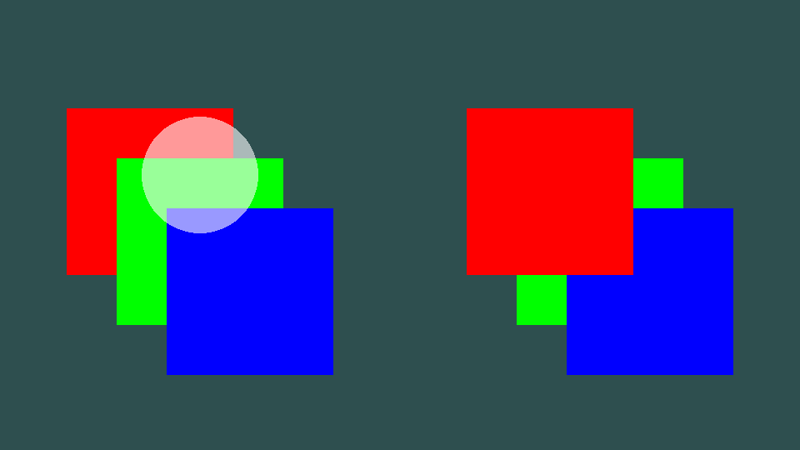
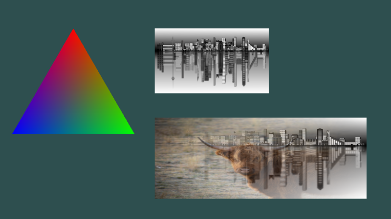
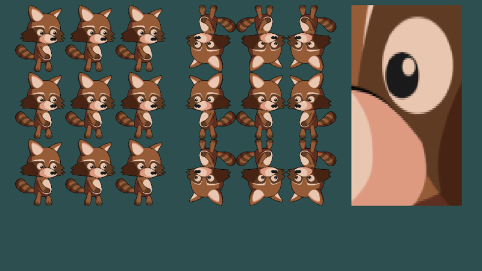
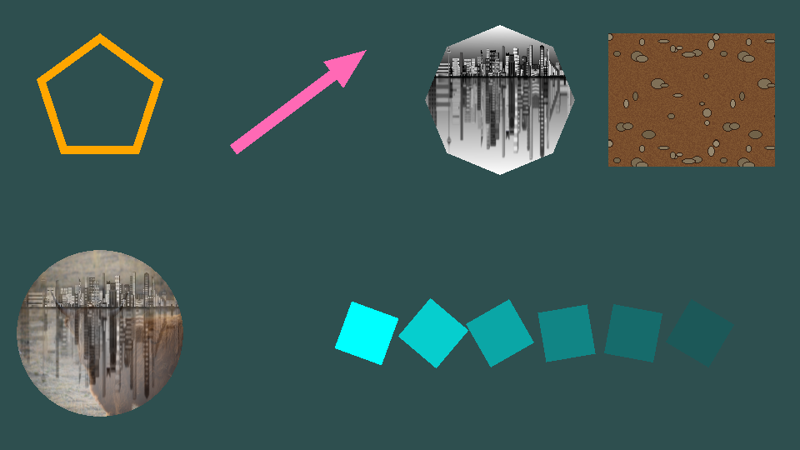

Drawing
Everything 2D in yak2D (sprites, shapes, tiles, text) is drawn the same way: you submit draw requests to a draw stage in your Drawing() method, then render the draw stage through a camera in Rendering().

Draw stages
A draw stage (IDrawStage) collects draw requests, sorts them, batches them together, and renders them. Create one in CreateResources(), along with a camera to view it through:
private IDrawStage _drawStage;
private ICamera2D _camera;
private ITexture _yak;
public override bool CreateResources(IServices yak)
{
_drawStage = yak.Stages.CreateDrawStage();
_camera = yak.Cameras.CreateCamera2D(960, 540);
_yak = yak.Surfaces.LoadTexture("yak", AssetSourceEnum.Embedded);
return true;
}
CreateDrawStage() has two optional parameters:
- clearDynamicRequestQueueEachFrame (default
true): the stage starts every frame empty, so you draw everything each frame. Set it tofalseto keep requests between frames (see Drawing things once). - blendState (default
BlendState.Alpha): how drawn pixels combine with what is already there (see Blend states).
Most games need only a few draw stages: typically one for the game world and one for the HUD, so the two can be viewed through different cameras.
Submitting and rendering
In Drawing(), submit requests to a stage. The simplest way is with the helper functions in draw.Helpers (IDrawingHelpers):
public override void Drawing(IDrawing draw, IFps fps, IInput input, ICoordinateTransforms transforms,
float secondsSinceLastDraw, float secondsSinceLastUpdate)
{
var helpers = draw.Helpers;
// Rectangles ("quads"): coloured, and textured. Positions are the centre of the shape
helpers.DrawColouredQuad(_drawStage, CoordinateSpace.Screen, Colour.CornflowerBlue,
new Vector2(-330.0f, 130.0f), 200.0f, 140.0f, 0.5f);
helpers.DrawTexturedQuad(_drawStage, CoordinateSpace.Screen, _yak, Colour.White,
new Vector2(-80.0f, 130.0f), 190.0f, 170.0f, 0.5f);
// Tinting: the texture colour is multiplied by the colour given
helpers.DrawTexturedQuad(_drawStage, CoordinateSpace.Screen, _yak, Colour.LightGreen,
new Vector2(170.0f, 130.0f), 190.0f, 170.0f, 0.5f,
rotation_clockwise_radians: 0.3f);
// Regular polygons: a triangle, a hexagon, and enough sides to look like a circle
helpers.DrawColouredPoly(_drawStage, CoordinateSpace.Screen, Colour.Orange, new Vector2(390.0f, 140.0f), 3, 70.0f, 0.5f);
helpers.DrawColouredPoly(_drawStage, CoordinateSpace.Screen, Colour.MediumPurple, new Vector2(-360.0f, -120.0f), 6, 75.0f, 0.5f);
helpers.DrawColouredPoly(_drawStage, CoordinateSpace.Screen, Colour.Crimson, new Vector2(-170.0f, -120.0f), 64, 70.0f, 0.5f,
xScaling: 1.0f, yScaling: 0.6f); // squashed into an ellipse
// Lines and arrows
helpers.DrawLine(_drawStage, CoordinateSpace.Screen, new Vector2(-40.0f, -60.0f), new Vector2(120.0f, -180.0f),
16.0f, Colour.Teal, 0.5f, rounded: true);
helpers.DrawArrow(_drawStage, CoordinateSpace.Screen, new Vector2(200.0f, -180.0f), new Vector2(420.0f, -60.0f),
18.0f, 60.0f, 60.0f, Colour.Gold, 0.5f);
}
Then in Rendering(), render the stage onto a surface through a camera:
public override void Rendering(IRenderQueue q, IRenderTarget windowRenderTarget)
{
q.ClearColour(windowRenderTarget, Colour.DarkSlateGray);
q.ClearDepth(windowRenderTarget);
q.Draw(_drawStage, _camera, windowRenderTarget);
}
Nothing is drawn until the stage is rendered with q.Draw(). A stage can be rendered more than once in a frame, through different cameras or onto different surfaces (see Viewports for split-screen).
The full example is Drawing.cs (DrawingBasics).
The helper functions
| Helper | Draws |
|---|---|
| DrawColouredQuad | A rectangle filled with one colour. |
| DrawTexturedQuad | A rectangle showing a texture (a sprite). Optional texture coordinates choose part of the texture. |
| DrawColouredPoly | A regular polygon (3 sides = triangle; 32 or more looks like a circle), optionally stretched with xScaling/yScaling. |
| DrawLine | A thick line, optionally with rounded ends. |
| DrawArrow | A line with an arrow head. |
Every helper takes the same core parameters:
- space:
CoordinateSpace.World(moved by the camera) orCoordinateSpace.Screen(fixed to the view). See Coordinate systems. - position: the centre of the shape.
- colour: for textured shapes this tints the texture: each texture pixel is multiplied by it, so
Colour.Whiteleaves the texture unchanged. Its alpha fades the whole shape. - depth and layer: the drawing order (next section).
- rotation_clockwise_radians, where supported: rotation about the centre.
For more complicated shapes, use the fluent shape builder or write draw requests yourself.
Layers and depth
Every request has a layer (an integer, 0 or more) and a depth (0.0 to 1.0):
- Higher layers are always drawn on top of lower layers.
- Within a layer, lower depth is nearer the viewer: depth 0 is at the front, depth 1 at the back.

public override void Drawing(IDrawing draw, IFps fps, IInput input, ICoordinateTransforms transforms,
float secondsSinceLastDraw, float secondsSinceLastUpdate)
{
var h = draw.Helpers;
var translucent = new Colour(1.0f, 1.0f, 1.0f, 0.6f);
// Left: all on layer 0, so depth decides. Lower depth is nearer the viewer
h.DrawColouredQuad(_drawStage, CoordinateSpace.Screen, Colour.Red, new Vector2(-300.0f, 40.0f), 200.0f, 200.0f, depth: 0.9f, layer: 0);
h.DrawColouredQuad(_drawStage, CoordinateSpace.Screen, Colour.Green, new Vector2(-240.0f, -20.0f), 200.0f, 200.0f, depth: 0.5f, layer: 0);
h.DrawColouredQuad(_drawStage, CoordinateSpace.Screen, Colour.Blue, new Vector2(-180.0f, -80.0f), 200.0f, 200.0f, depth: 0.1f, layer: 0);
// Right: the same depths, but the red square is on a higher layer, so it is drawn on top of both
h.DrawColouredQuad(_drawStage, CoordinateSpace.Screen, Colour.Red, new Vector2(180.0f, 40.0f), 200.0f, 200.0f, depth: 0.9f, layer: 1);
h.DrawColouredQuad(_drawStage, CoordinateSpace.Screen, Colour.Green, new Vector2(240.0f, -20.0f), 200.0f, 200.0f, depth: 0.5f, layer: 0);
h.DrawColouredQuad(_drawStage, CoordinateSpace.Screen, Colour.Blue, new Vector2(300.0f, -80.0f), 200.0f, 200.0f, depth: 0.1f, layer: 0);
// Translucent shapes blend with whatever is behind them, whatever order they were submitted in,
// because each stage sorts its requests back to front before drawing
h.DrawColouredPoly(_drawStage, CoordinateSpace.Screen, translucent, new Vector2(-240.0f, 60.0f), 48, 70.0f, depth: 0.0f, layer: 0);
}
On the left all three squares are on layer 0, so depth decides the order. On the right the red square is on layer 1, so it is on top whatever its depth. The order you submit requests in makes no difference: each draw stage sorts its requests from back to front before drawing, which is also why transparency blends correctly.
Sorting is by layer, then depth, then texture. Requests that share a texture and end up next to each other after sorting are drawn in a single batch, so giving sprites that share a texture the same layer and depth (when their relative order doesn't matter) makes drawing faster.
Depth between draw stages
Draw stages write to the render target's depth buffer, and later stages are depth-tested against it. If you render two draw stages onto the same surface, something in the second stage can be hidden by something from the first that is on a higher layer or has a lower depth. When the second stage should simply be drawn on top of the first (a HUD over the game, for example), clear the depth in between:
q.Draw(_worldStage, _camera, windowRenderTarget);
q.ClearDepth(windowRenderTarget); // what follows is drawn on top, regardless of layers and depths
q.Draw(_hudStage, _hudCamera, windowRenderTarget);
Always clear a surface's depth once at the start of each frame, too: with q.ClearDepth(), by creating render targets with auto-clear on (the default), or with AutoClearMainWindowDepthEachFrame for the window.
Draw requests
Under the hood, everything drawn is a DrawRequest: a list of triangles and how to fill them. Writing them yourself gives complete control over shape, colour and texturing.

A request is a set of vertices (Vertex2D) and a list of indices. Every three indices make one triangle, each index being a position in the vertex array:
// One triangle, with a different colour at each corner. The GPU blends between them
var triangle = new DrawRequest
{
CoordinateSpace = CoordinateSpace.Screen,
FillType = FillType.Coloured,
Colour = Colour.White, // multiplied with every vertex colour
Vertices = new[]
{
new Vertex2D { Position = new Vector2(-300.0f, 200.0f), Colour = Colour.Red },
new Vertex2D { Position = new Vector2(-150.0f, -60.0f), Colour = Colour.Lime },
new Vertex2D { Position = new Vector2(-450.0f, -60.0f), Colour = Colour.Blue },
},
Indices = new[] { 0, 1, 2 }, // groups of three indices into Vertices, one group per triangle
Depth = 0.5f,
Layer = 0,
};
draw.Draw(_drawStage, triangle);
| DrawRequest field | Meaning |
|---|---|
CoordinateSpace |
World or Screen. |
FillType |
Coloured (vertex colours only), Textured (one texture) or DualTextured (two blended textures). |
Vertices, Indices |
The triangles. The number of indices must be a multiple of three. |
Colour |
Multiplied with every vertex's colour. |
Texture0, Texture1 |
The texture(s) for Textured and DualTextured fills (null otherwise). |
TextureWrap0, TextureWrap1 |
What happens to texture coordinates outside 0 to 1: Wrap or Mirror. |
Depth, Layer |
Drawing order, as above. |
| Vertex2D field | Meaning |
|---|---|
Position |
Where the vertex is, in the request's coordinate space. |
Colour |
The vertex colour, multiplied by the request's Colour. Colours are blended smoothly across each triangle. Always set it (Colour.White for "no change"): the default is transparent black, which makes the vertex invisible even on textured requests. |
TexCoord0, TexCoord1 |
Texture coordinates for texture 0 and texture 1. |
TexWeighting |
For DualTextured fills: how much of texture 0 to use (1.0 = all texture 0, 0.0 = all texture 1). |
A textured rectangle needs four vertices and two triangles. Texture coordinates run from (0,0) at the top-left of the texture to (1,1) at the bottom-right:
// A textured rectangle made of two triangles that share two of the four vertices.
// Texture coordinates run from (0,0) at the top-left of the texture to (1,1) at the bottom-right
var picture = new DrawRequest
{
CoordinateSpace = CoordinateSpace.Screen,
FillType = FillType.Textured,
Colour = Colour.White,
Texture0 = _city,
TextureWrap0 = TextureCoordinateMode.Wrap,
Vertices = new[]
{
new Vertex2D { Position = new Vector2(-100.0f, 200.0f), TexCoord0 = new Vector2(0.0f, 0.0f), Colour = Colour.White },
new Vertex2D { Position = new Vector2(180.0f, 200.0f), TexCoord0 = new Vector2(1.0f, 0.0f), Colour = Colour.White },
new Vertex2D { Position = new Vector2(180.0f, 40.0f), TexCoord0 = new Vector2(1.0f, 1.0f), Colour = Colour.White },
new Vertex2D { Position = new Vector2(-100.0f, 40.0f), TexCoord0 = new Vector2(0.0f, 1.0f), Colour = Colour.White },
},
Indices = new[] { 0, 1, 2, 0, 2, 3 },
Depth = 0.5f,
Layer = 0,
};
draw.Draw(_drawStage, picture);
Dual texturing blends two textures, with the mix set per vertex:
// Dual texturing blends two textures. Each vertex's TexWeighting is how much of Texture0 to use
// (the rest is Texture1), so here the yak on the left fades into the city on the right
var blend = new DrawRequest
{
CoordinateSpace = CoordinateSpace.Screen,
FillType = FillType.DualTextured,
Colour = Colour.White,
Texture0 = _yakPhoto,
Texture1 = _city,
TextureWrap0 = TextureCoordinateMode.Wrap,
TextureWrap1 = TextureCoordinateMode.Wrap,
Vertices = new[]
{
new Vertex2D { Position = new Vector2(-100.0f, -20.0f), TexCoord0 = new Vector2(0.0f, 0.0f), TexCoord1 = new Vector2(0.0f, 0.0f), TexWeighting = 1.0f, Colour = Colour.White },
new Vertex2D { Position = new Vector2(420.0f, -20.0f), TexCoord0 = new Vector2(1.0f, 0.0f), TexCoord1 = new Vector2(1.0f, 0.0f), TexWeighting = 0.0f, Colour = Colour.White },
new Vertex2D { Position = new Vector2(420.0f, -220.0f), TexCoord0 = new Vector2(1.0f, 1.0f), TexCoord1 = new Vector2(1.0f, 1.0f), TexWeighting = 0.0f, Colour = Colour.White },
new Vertex2D { Position = new Vector2(-100.0f, -220.0f), TexCoord0 = new Vector2(0.0f, 1.0f), TexCoord1 = new Vector2(0.0f, 1.0f), TexWeighting = 1.0f, Colour = Colour.White },
},
Indices = new[] { 0, 1, 2, 0, 2, 3 },
Depth = 0.5f,
Layer = 0,
};
draw.Draw(_drawStage, blend);
Submit requests with draw.Draw(). A request can be built once and submitted every frame, as the sky gradient in the Yak Run tutorial is. There is also an overload that takes the request's parts as separate parameters, and one that takes the request by ref to avoid a copy.
Tip
Pass validate: true to Draw() while developing. The request is checked first (enough vertices, indices in multiples of three, textures present for textured fills) and skipped with a console message if something is wrong, rather than causing an error later.
Texture coordinates, wrapping and filtering

public override bool CreateResources(IServices yak)
{
_drawStage = yak.Stages.CreateDrawStage();
_camera = yak.Cameras.CreateCamera2D(960, 540);
// The same image, loaded twice with different sampler filters
_raccoon = yak.Surfaces.LoadTexture("raccoon", AssetSourceEnum.Embedded);
_raccoonPoint = yak.Surfaces.LoadTexture("raccoon", AssetSourceEnum.Embedded, ImageFormat.PNG, SamplerType.Point, false);
return true;
}
public override void Drawing(IDrawing draw, IFps fps, IInput input, ICoordinateTransforms transforms,
float secondsSinceLastDraw, float secondsSinceLastUpdate)
{
var h = draw.Helpers;
// Texture coordinates from -1 to 2 show the texture three times across and down.
// Wrap repeats it, Mirror flips every other copy
h.DrawTexturedQuad(_drawStage, CoordinateSpace.Screen, _raccoon, Colour.White, new Vector2(-300.0f, 60.0f), 300.0f, 400.0f, 0.5f,
texcoord_min_x: -1.0f, texcoord_min_y: -1.0f, texcoord_max_x: 2.0f, texcoord_max_y: 2.0f,
textureMode: TextureCoordinateMode.Wrap);
h.DrawTexturedQuad(_drawStage, CoordinateSpace.Screen, _raccoon, Colour.White, new Vector2(40.0f, 60.0f), 300.0f, 400.0f, 0.5f,
texcoord_min_x: -1.0f, texcoord_min_y: -1.0f, texcoord_max_x: 2.0f, texcoord_max_y: 2.0f,
textureMode: TextureCoordinateMode.Mirror);
// Swapping min and max x flips the image horizontally. Drawing a small texture very large shows
// the difference between point sampling (hard pixels) and the default (smooth) filtering
h.DrawTexturedQuad(_drawStage, CoordinateSpace.Screen, _raccoonPoint, Colour.White, new Vector2(330.0f, 60.0f), 220.0f, 400.0f, 0.5f,
texcoord_min_x: 0.62f, texcoord_min_y: 0.35f, texcoord_max_x: 0.42f, texcoord_max_y: 0.55f);
}
- Texture coordinates choose which part of a texture is drawn. DrawTexturedQuad takes
texcoord_min_x,texcoord_min_y,texcoord_max_xandtexcoord_max_yfor its left, top, right and bottom edges. Use them to pick one frame from a sprite sheet (an image containing many frames), or swap min and max to flip an image. - Coordinates outside 0 to 1 repeat the texture. TextureCoordinateMode chooses how:
Wraprepeats it (left);Mirrorflips every other copy (middle). Repeating is how tiled floors and walls are drawn: for a 128 pixel texture over a 1000 unit wide platform, use a maximum coordinate of 1000 / 128. - Filtering is chosen when a texture is loaded or created (the SamplerType). The right-hand picture is drawn from a texture loaded with
SamplerType.Point, which keeps hard pixel edges when enlarged; the default filters are smooth.
Tip
With Wrap, the GPU's filtering blends the pixels at each edge of a texture with those at the opposite edge. On a sprite this can show up as faint lines or specks along an edge. Leave a transparent border round sprite images, or use Mirror.
The fluent shape builder
draw.Helpers.Construct() starts a chain of calls that builds a shape step by step: fill, then shape, then outline or filled, then optional transforms, then draw.

// Construct() -> fill type -> shape -> Filled() or Outline() -> draw
h.Construct()
.Coloured(Colour.Orange)
.Poly(new Vector2(-360.0f, 150.0f), 5, 80.0f)
.Outline(12.0f)
.SubmitDraw(_drawStage, CoordinateSpace.Screen, 0.5f, 0);
h.Construct()
.Coloured(Colour.HotPink)
.Line(new Vector2(-200.0f, 90.0f), new Vector2(-40.0f, 210.0f), 14.0f)
.Arrow(40.0f, 50.0f)
.Filled()
.SubmitDraw(_drawStage, CoordinateSpace.Screen, 0.5f, 0);
The first call chooses the fill: Coloured(colour), Textured(brush, colour) or DualTextured(brush0, brush1, mixDirection, colour). A TextureBrush describes how a texture covers the shape: stretched to fit it (TextureScaling.Stretch), or repeated at a fixed scale (Tiled):
// A texture brush says how a texture covers a shape: stretched to fit, or tiled at a set scale
var stretched = new TextureBrush(_city, TextureCoordinateMode.Wrap, TextureScaling.Stretch, Vector2.One);
var tiled = new TextureBrush(_soil, TextureCoordinateMode.Wrap, TextureScaling.Tiled, new Vector2(1.0f, 1.0f));
h.Construct().Textured(stretched, Colour.White).Poly(new Vector2(120.0f, 150.0f), 8, 90.0f).Filled()
.SubmitDraw(_drawStage, CoordinateSpace.Screen, 0.5f, 0);
h.Construct().Textured(tiled, Colour.White).Quad(new Vector2(350.0f, 150.0f), 200.0f, 160.0f).Filled()
.SubmitDraw(_drawStage, CoordinateSpace.Screen, 0.5f, 0);
// Two brushes blended across the shape: here from the middle (yak) outwards (city)
var yakBrush = new TextureBrush(_yakPhoto, TextureCoordinateMode.Wrap, TextureScaling.Stretch, Vector2.One);
h.Construct().DualTextured(yakBrush, stretched, TextureMixDirection.Radial, Colour.White)
.Poly(new Vector2(-360.0f, -130.0f), 48, 100.0f).Filled()
.SubmitDraw(_drawStage, CoordinateSpace.Screen, 0.5f, 0);
The shape can be a Quad, a regular Poly, a Poly from your own vertices and indices (as the stars in Yak Run are), a Line, a RoundedLine, or an Arrow (made from a line). Then choose Filled() or Outline(width).
Each step returns a new object, so a finished shape can be moved, rotated, scaled or recoloured to make variations, and turned into a DrawRequest with GenerateDrawRequest() instead of being submitted straight away:
// Each step returns a new, modified copy, so a shape can be built once and stamped out many times
var square = h.Construct().Coloured(Colour.Aqua).Quad(new Vector2(-120.0f, -130.0f), 60.0f, 60.0f).Filled();
for (var n = 0; n < 6; n++)
{
square = square.ShiftPosition(new Vector2(80.0f, 0.0f))
.Rotate(0.25f + (0.1f * _time))
.ChangeColour(Colour.Aqua * (1.0f - (n * 0.12f)));
draw.Draw(_drawStage, square.GenerateDrawRequest(CoordinateSpace.Screen, 0.5f, 0));
}
Blend states
A draw stage's BlendState sets how each new pixel combines with the pixel already on the surface:
| BlendState | Result | Use for |
|---|---|---|
Alpha (default) |
Normal transparency: the new colour covers the old in proportion to its alpha. | Almost everything. |
AdditiveAlpha |
The new colour (scaled by its alpha) is added to the old. Overlaps get brighter. | Light, fire, sparks, glows. |
AdditiveComponentWise |
Red, green, blue and alpha are all added. | Accumulating values, special effects. |
Override |
The new pixel simply replaces the old, including its alpha. | Copying, or drawing things that must not blend. |
The blend state belongs to the whole stage, so use a separate stage for, say, additive particle effects.
Note
Known issue: with Alpha blending, drawing a partly transparent shape onto an opaque render target leaves the target's alpha slightly below 1 where the shape was drawn. Copying the target is unaffected, but some effect stages (for example colour effects and distortion) then show those pixels darker than expected. If translucent shapes look too dark after an effect, draw them fully opaque where you can.
Drawing things once
By default every draw stage is emptied at the start of each frame, so you submit everything each frame. That is simple, and fast enough for thousands of sprites. For large amounts of unchanging drawing (a big tiled background, say) there are two ways to submit it just once:
A stage that is not cleared each frame. Everything submitted stays until you call ClearDynamicDrawRequestQueue(). A stage whose contents have not changed is not re-sorted or re-sent to the GPU:
public override bool CreateResources(IServices yak)
{
// This stage is NOT cleared automatically each frame: whatever is drawn to it stays until
// ClearDynamicDrawRequestQueue() is called. Unchanged queues are not re-sorted or re-uploaded
_staticStage = yak.Stages.CreateDrawStage(clearDynamicRequestQueueEachFrame: false);
// The default: a stage that starts empty every frame
_dynamicStage = yak.Stages.CreateDrawStage();
_camera = yak.Cameras.CreateCamera2D(960, 540);
_hasDrawnStaticScene = false;
return true;
}
private bool _hasDrawnStaticScene;
public override void Drawing(IDrawing draw, IFps fps, IInput input, ICoordinateTransforms transforms,
float secondsSinceLastDraw, float secondsSinceLastUpdate)
{
_time += secondsSinceLastDraw;
if (!_hasDrawnStaticScene)
{
// A few thousand shapes, submitted once
var random = new Random(1);
for (var n = 0; n < 3000; n++)
{
var position = new Vector2(random.Next(-480, 480), random.Next(-270, 270));
var colour = new Colour(0.2f, 0.3f + (0.5f * (float)random.NextDouble()), 0.4f, 1.0f);
draw.Helpers.DrawColouredPoly(_staticStage, CoordinateSpace.Screen, colour, position, 6, 6.0f, 0.8f);
}
_hasDrawnStaticScene = true;
}
// Moving things are drawn every frame to the normal stage
var x = 380.0f * MathF.Sin(_time);
draw.Helpers.DrawColouredPoly(_dynamicStage, CoordinateSpace.Screen, Colour.Orange, new Vector2(x, 0.0f), 48, 50.0f, 0.5f);
}
public override void Rendering(IRenderQueue q, IRenderTarget windowRenderTarget)
{
q.ClearColour(windowRenderTarget, Colour.DarkSlateGray);
q.ClearDepth(windowRenderTarget);
q.Draw(_staticStage, _camera, windowRenderTarget);
q.Draw(_dynamicStage, _camera, windowRenderTarget);
}
Persistent draw queues. CreatePersistentDrawQueue() attaches an array of requests to a stage permanently (until RemovePersistentDrawQueue()). They are sorted together with the stage's normal requests, so they can be interleaved with them by layer and depth. Mixing the two means the whole stage is re-sorted when the normal requests change, so a separate uncleared stage (above) is usually simpler and just as fast.
Performance tips
- Keep the number of draw stages small: each is a separate sort and at least one GPU draw call.
- Sprites that share a texture batch together when they are adjacent after sorting. Put many small images in one sprite sheet texture.
- Build requests that never change (vertex arrays, index arrays) once and reuse them, rather than allocating new arrays each frame.
- Very large numbers of unchanging shapes: see Drawing things once.
See also
- Text: drawing strings
- Cameras and Coordinate systems: where things appear
- Samples: Draw_BasicPolygonHelperFunctions, Draw_PolygonsFromVertices, Draw_FluentInterfaceDrawingHelper, Draw_PersistentDrawQueue